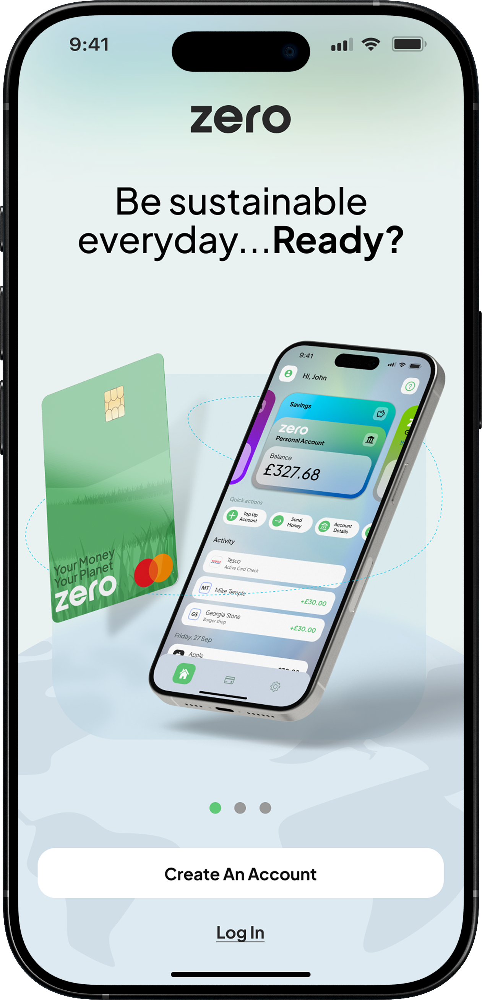
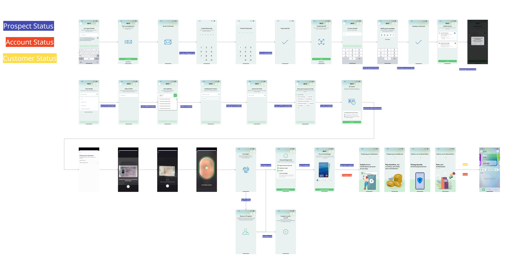
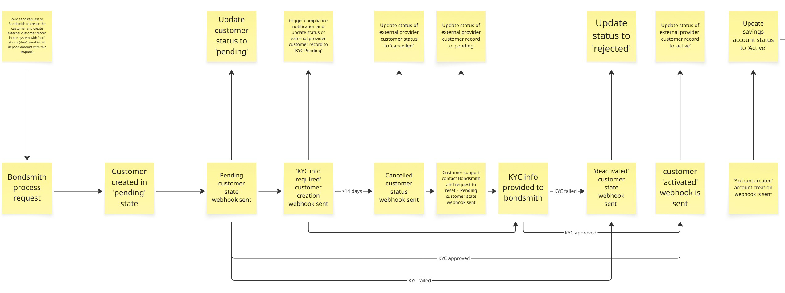
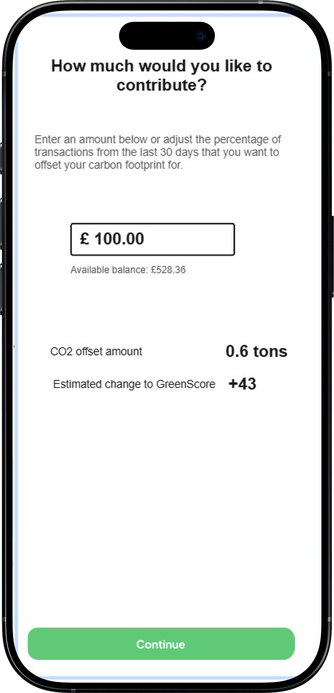
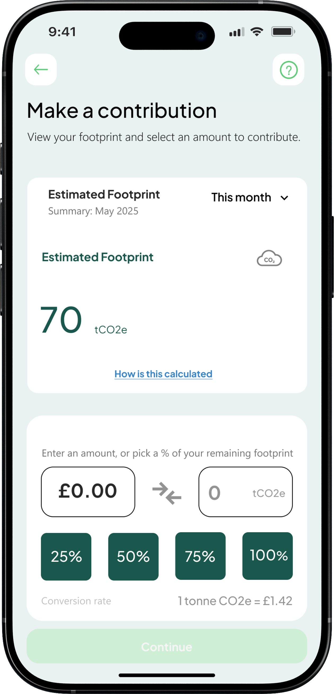
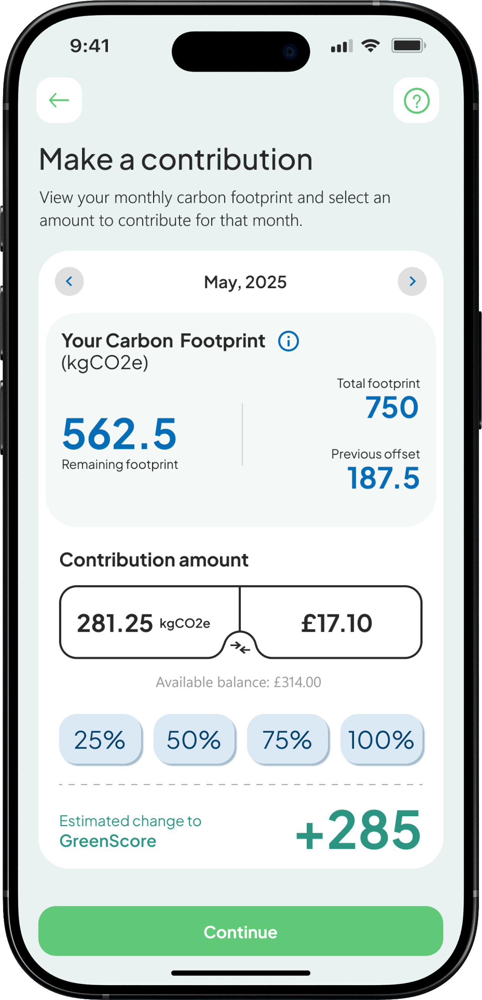
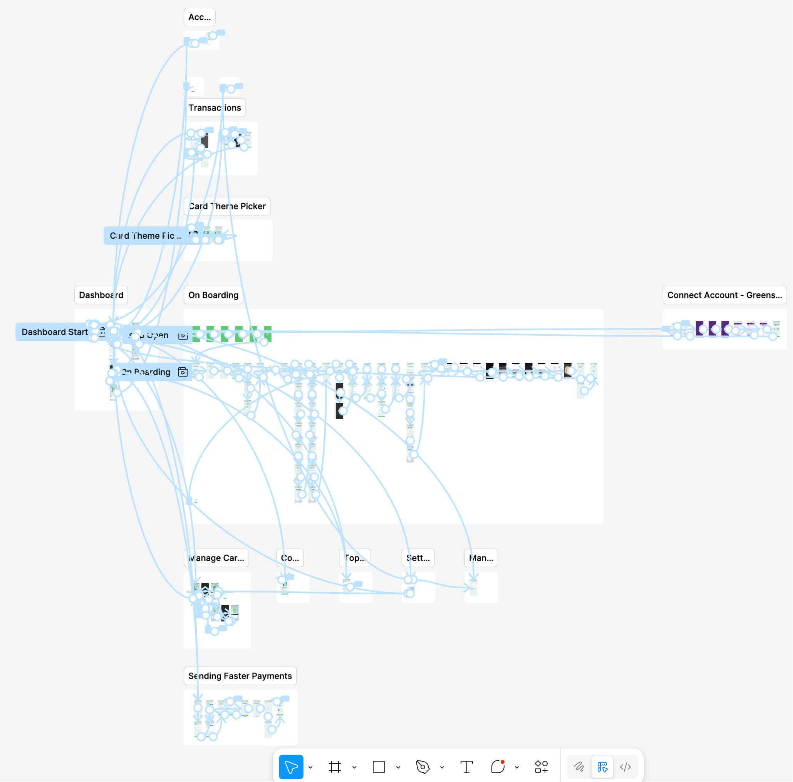
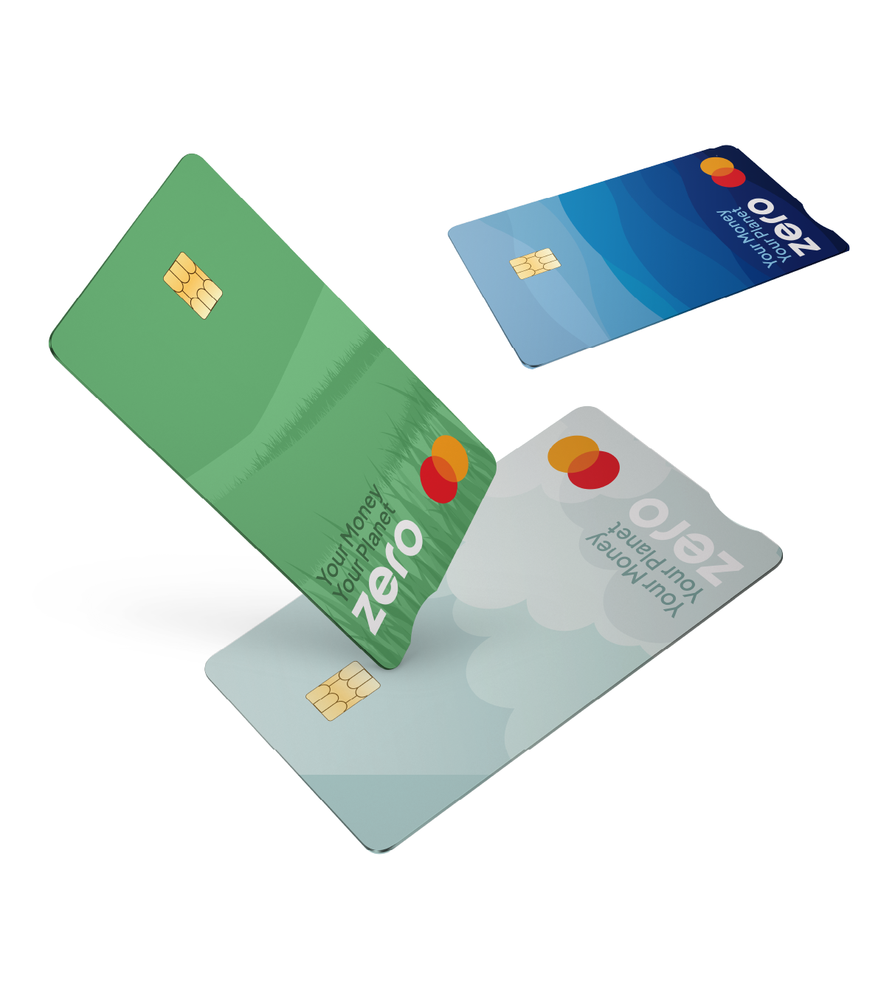
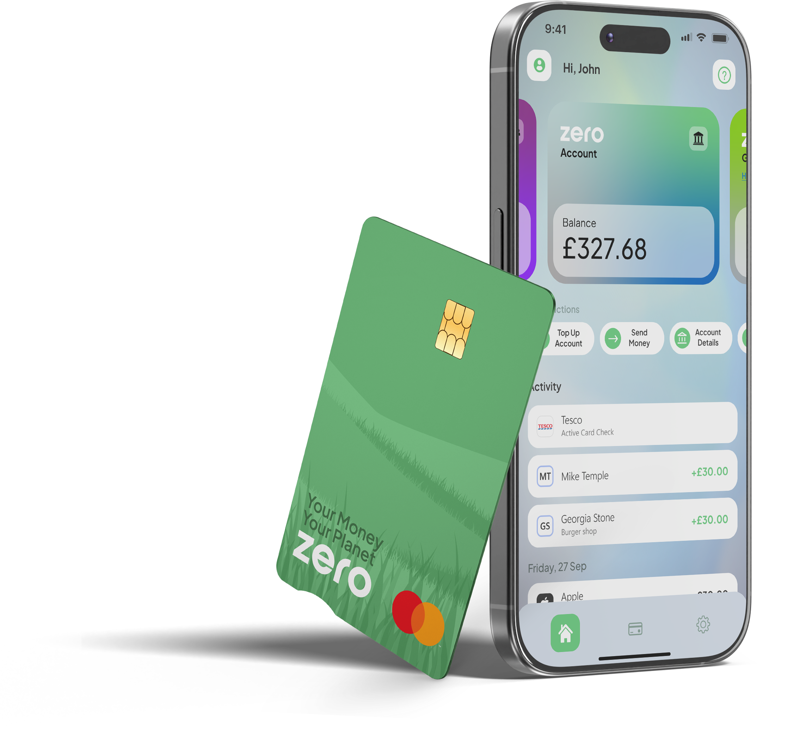
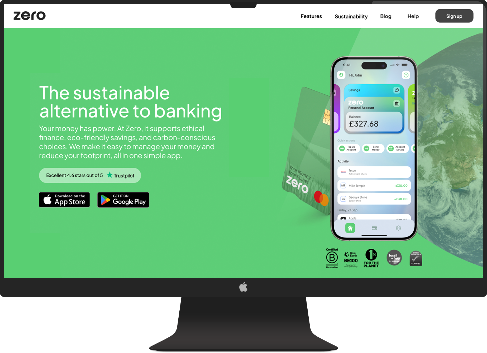

At Zero, I was the first product designer, leading the end-to-end design of a brand-new digital banking experience. I built the product from the ground up, creating the design system, mapping complete user journeys, designing the website, and ensuring every touchpoint, from onboarding to physical debit cards, was coherent, usable, and aligned with the brand. My work balanced strategic thinking, user-centered design, and practical execution, delivering a product that felt trustworthy, simple, and scalable.
From research to production, I mapped and simplified a complex journeys, including onboarding, account sign-up, first transactions, and savings account setup. This created a seamless first-time experience that reduced friction, improved user confidence, and guided users through critical early steps with clarity.
I mapped a detailed end-to-end journey across customer states, covering KYC, account creation, and activation flows. Informed by competitor analysis and fintech research, I reduced unnecessary steps and structured the experience to be more seamless than existing solutions, allowing users to progress with clarity and minimal friction.


In more complex scenarios, a linear journey was not enough. Interactions involving KYC, external providers, and changing customer states required mapping multiple outcomes rather than a single path. This reinforced that product design is not always clear cut, requiring adaptability to real-world constraints while still delivering a clear and consistent user experience.

I moved from low to high fidelity to take ideas from rough concepts through to production. Wireframes let me quickly map out flows and structure, while high fidelity designs refined the detail, interactions, and usability. This kept things moving fast early on, while making sure the final experience was solid and ready to build.
Wireframe

Low fidelity

High fidelity

I used Figma prototypes to test flows and interactions, helping identify friction early and refine the experience before development. These prototypes were also used to align stakeholders and support early funding discussions.

I focused on shaping a core experience that feels simple and easy to trust. I translated complex financial journeys into clear, guided steps, helping users set up accounts, complete key actions, and start saving with minimal friction.
I mapped the full end to end journey across different customer states and refined the flows using research and competitor insights. By removing unnecessary steps and simplifying processes like KYC and account setup, the experience feels smooth, familiar, and easy to navigate from the start.
Understanding how users move through complex, high pressure journeys and making those experiences feel clear and reliable. This Faster Payments flow is a strong example of that, where speed, accuracy, and trust are critical. I focused on breaking the process down into simple, structured steps that guide the user with confidence, reducing friction and making sure each action feels safe and intentional. The result is a flow that supports a core user need while staying fast, predictable, and easy to use.
I focused on building trust through a clear and consistent visual identity that makes the product feel credible from the first interaction. In a space where users are naturally cautious, the goal was to create a calm, confident experience that feels reliable across every touchpoint. This extended beyond the interface into designing the debit cards and supporting marketing materials, ensuring the brand feels considered wherever users engage with it.
I developed a cohesive system across the app, website, and physical assets so everything feels aligned and intentional. The website was also recognised by HubSpot as one of the top fintech designs to take inspiration from, ranking #4,blog.hubspot.com/website/30-financial-website-designs-to-inspire-you, which reflects the strength of the overall direction. Showing both digital and physical outputs highlights how the brand carries through the full experience, helping the product feel more established and trustworthy from day one.



In more complex scenarios, a linear journey was not enough. Interactions involving KYC, external providers, and changing customer states required mapping multiple outcomes rather than a single path. This reinforced that product design is not always clear cut, requiring adaptability to real-world constraints while still delivering a clear and consistent user experience.
I moved from low to high fidelity to take ideas from rough concepts through to production. Wireframes let me quickly map out flows and structure, while high fidelity designs refined the detail, interactions, and usability. This kept things moving fast early on, while making sure the final experience was solid and ready to build.
Wireframe
Low fidelity
High fidelity
I used Figma prototypes to test flows and interactions, helping identify friction early and refine the experience before development. These prototypes were also used to align stakeholders and support early funding discussions.